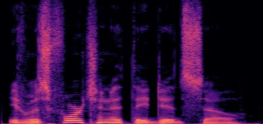
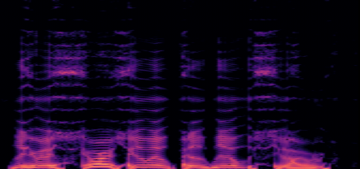
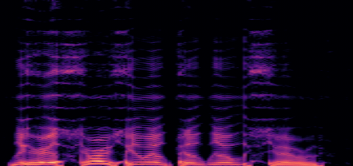
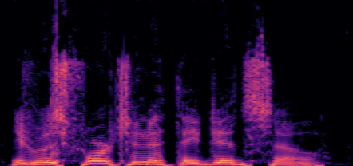
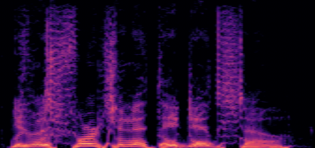
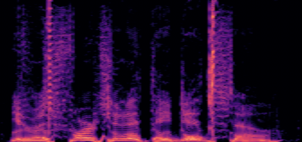
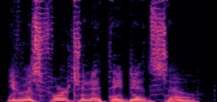

Each sample is produced by fitting a differentiable waveguide vocal-tract synthesiser to a reference recording (one optimisation per utterance). The systems differ in what they optimise and how they generate fricative noise.
Reference
The original LibriTTS-R recording.
VocalTrax
Baseline: articulatory control parameters are optimized directly; no turbulence noise.
Area
The tract area function is optimized directly; no turbulence noise.
Area + wave-gated
Area, plus turbulence noise gated by a Reynolds-number criterion computed from the acoustic wave state.
Area + flow-gated
Area, plus turbulence noise with the gate computed from the mean airflow through the tract.
fmax
Upper frequency (Hz) of the mel-spectrogram training loss: 11900 Hz for most systems shown, plus 7800 Hz variants of VocalTrax and Area.
Thumbnails are spectrograms covering 0–12 kHz (bottom to top) on a shared
colour scale. Fricatives such as /s/, /z/ and /ʃ/ appear as broadband energy above roughly 4 kHz.
Listening on headphones makes the differences easier to hear.
Comparison across systems
Utterances from the 150-utterance test set, chosen to cover several speakers and to include
fricatives.
“It was fortunate they did so.”
Male speaker · 1.7 s · 1320_122612_000030_000000
ReferenceOriginal recording

VocalTraxfmax = 7800 Hz

VocalTraxfmax = 11900 Hz

Areafmax = 7800 Hz

Areafmax = 11900 Hz

Area + wave-gatedfmax = 11900 Hz

Area + flow-gatedfmax = 11900 Hz

“Can you see where he has put his rifle or his bow?”